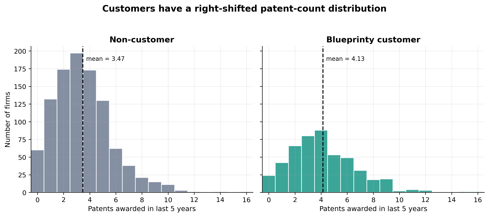
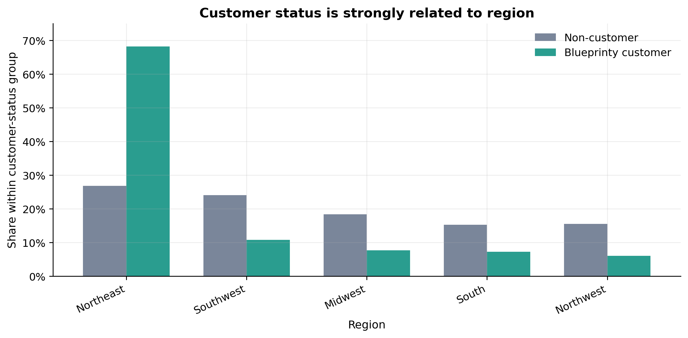
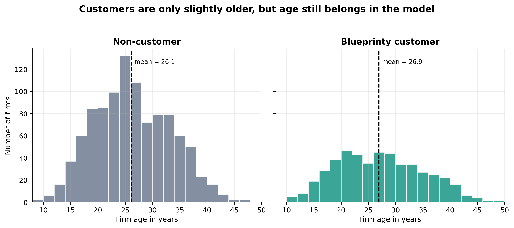
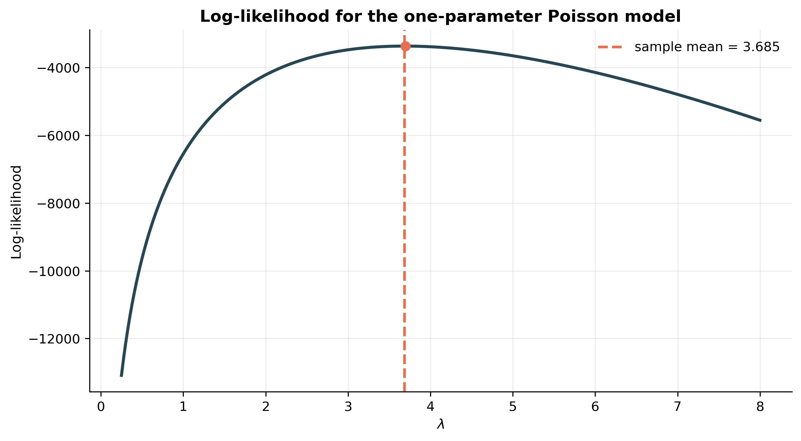
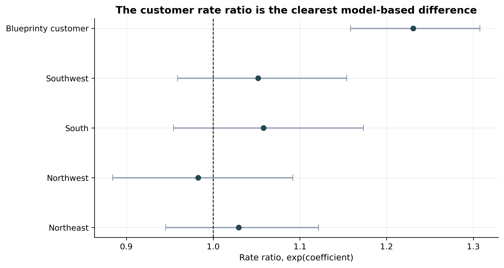
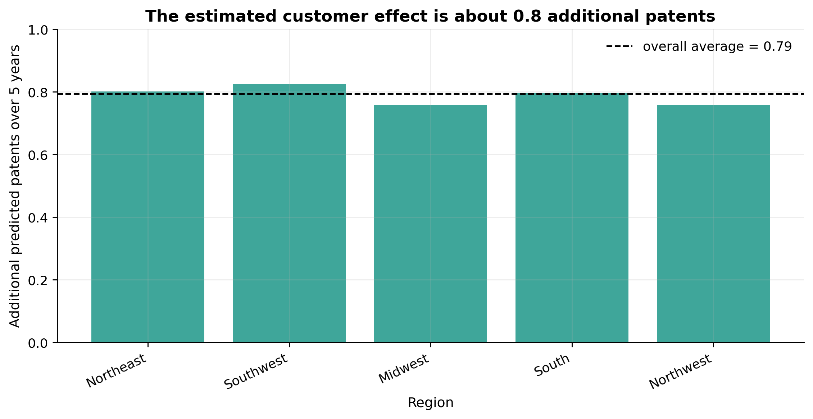

| Group | Firms | Share of sample | Mean patents | Median patents | SD of patents | Mean age |
|---|---|---|---|---|---|---|
| Non-customer | 1019 | 0.679 | 3.473 | 3.000 | 2.225 | 26.102 |
| Blueprinty customer | 481 | 0.321 | 4.133 | 4.000 | 2.547 | 26.900 |
Poisson Regression and Maximum Likelihood Estimation
A Case Study of Blueprinty’s Software and Patent Awards
Introduction
Blueprinty is a small software firm that builds tools for developing blueprint-style materials used in patent applications. Its marketing team would like to make a simple-sounding claim: firms that use Blueprinty’s software are more successful at getting patents approved.
That claim is useful for marketing, but it is not trivial to evaluate statistically. The ideal dataset would follow the same firms before and after they adopted Blueprinty’s software, or even better, randomly assign otherwise similar firms to use or not use the product. That is not the dataset available here. Instead, Blueprinty has collected a cross-sectional dataset of 1,500 mature, non-startup engineering firms. For each firm, we observe the number of patents awarded over the last five years, the firm’s region, its age since incorporation, and whether it currently uses Blueprinty’s software.
The key problem is selection. Blueprinty’s customers are not randomly selected from the population of engineering firms. If customers tend to be older, located in more patent-intensive regions, or otherwise more innovation-oriented, then a raw difference in patent counts could reflect those firm characteristics rather than the effect of the software. For that reason, this post moves in three steps: first, I explore the raw differences in the data; second, I build a Poisson likelihood from scratch; and third, I estimate a Poisson regression that controls for firm age and region before interpreting the customer effect.
Exploring the Data
The outcome variable is patents, the number of patents awarded to each firm over the past five years. Because this is a count variable, it can only take non-negative integer values. Before building a model, it is useful to look at whether customers and non-customers differ in the outcome and in the covariates that might confound the comparison.
The raw comparison favors Blueprinty. Non-customers average 3.47 patents over five years, while customers average 4.13 patents. The difference is about 0.66 patents, or roughly 19% higher for customers before making any adjustment for age or region. This raw difference is a useful starting point, but it should not be read as a causal effect because the firms in the two groups may not be comparable.

Figure 1 shows that customers are shifted somewhat to the right: they are less concentrated at the lowest patent counts and more visible in the middle and upper part of the distribution. However, the overlap is substantial. Many non-customers receive several patents, and many customers receive only a few. That overlap is exactly why a regression model is helpful: customer status matters, but it is not the only thing related to patenting.
Next, I compare the regional composition of customers and non-customers. This is an important diagnostic because region could be associated with patent outcomes through industry concentration, local legal resources, university spillovers, or regional networks.
| Region | Non-customers (%) | Customers (%) | Difference (pp) |
|---|---|---|---|
| Northeast | 26.8 | 68.2 | 41.4 |
| Southwest | 24.0 | 10.8 | -13.2 |
| Midwest | 18.4 | 7.7 | -10.7 |
| South | 15.3 | 7.3 | -8.0 |
| Northwest | 15.5 | 6.0 | -9.5 |

The regional imbalance is large. About 68% of Blueprinty customers are in the Northeast, compared with about 27% of non-customers. Meanwhile, non-customers are more spread across the Southwest, Midwest, South, and Northwest. This matters because a simple customer/non-customer comparison could partly be a Northeast/non-Northeast comparison in disguise. The regression model below controls for region so that the Blueprinty coefficient is not merely picking up this compositional difference.
Finally, I compare firm age. Older firms might have more engineering experience, larger patent portfolios, and more familiarity with the patent application process.

The age difference is smaller than the regional difference: customers average about 26.9 years old, while non-customers average about 26.1 years old. Still, age is theoretically important because firm experience may shape patent production. I therefore include both age and age squared in the regression model to allow a nonlinear age-patenting relationship.
A Simple Poisson Model via Maximum Likelihood
Because the outcome is a count, a Normal model is not a natural first choice. Patent counts cannot be negative, and values like 2.7 patents are not possible for a single firm. The Poisson distribution is a standard starting point for non-negative integer outcomes. I start with the simplest possible Poisson model, where every firm shares the same patent rate \(\lambda\):
\[ Y_i \sim \text{Poisson}(\lambda). \]
For one firm, the Poisson probability mass function is
\[ f(Y_i \mid \lambda) = \frac{e^{-\lambda}\lambda^{Y_i}}{Y_i!}. \]
Assuming the observations are independent and identically distributed, the likelihood for the full sample is the product of the individual probabilities:
\[ L(\lambda \mid y_1, \ldots, y_n) = \prod_{i=1}^{n} \frac{e^{-\lambda}\lambda^{y_i}}{y_i!}. \]
This product can be simplified by collecting terms involving \(\lambda\):
\[ L(\lambda \mid y_1, \ldots, y_n) = e^{-n\lambda}\lambda^{\sum_i y_i}\prod_{i=1}^{n}\frac{1}{y_i!}. \]
Taking logs gives the log-likelihood:
\[ \ell(\lambda) = -n\lambda + \left(\sum_{i=1}^{n}y_i\right)\log(\lambda) - \sum_{i=1}^{n}\log(y_i!). \]
The last term does not depend on \(\lambda\), but I keep it in the code so that the function returns the complete Poisson log-likelihood.
def poisson_loglikelihood(lambda_, Y):
"""Poisson log-likelihood for a common rate lambda_."""
if lambda_ <= 0:
return -np.inf
return np.sum(-lambda_ + Y * np.log(lambda_) - special.gammaln(Y + 1))The next plot evaluates the log-likelihood over a grid of possible \(\lambda\) values. The MLE is the value of \(\lambda\) where this curve is highest.
lambda_grid = np.linspace(0.25, 8, 300)
loglik_values = np.array([poisson_loglikelihood(lam, Y) for lam in lambda_grid])
sample_mean = Y.mean()
fig, ax = plt.subplots(figsize=(8.6, 4.8))
ax.plot(lambda_grid, loglik_values, linewidth=2.3, color="#264653")
ax.axvline(sample_mean, color="#e76f51", linestyle="--", linewidth=2, label=f"sample mean = {sample_mean:.3f}")
ax.scatter([lambda_grid[np.argmax(loglik_values)]], [loglik_values.max()], s=45, color="#e76f51", zorder=3)
ax.set_title("Log-likelihood for the one-parameter Poisson model")
ax.set_xlabel(r"$\lambda$")
ax.set_ylabel("Log-likelihood")
ax.legend()
plt.tight_layout()
plt.show()
Visually, the curve peaks near \(\lambda = 3.685\). The curve is also concave around the maximum: moving \(\lambda\) away from this point makes the observed patent counts less likely under the model.
We can also solve the simple model analytically. Differentiate the log-likelihood with respect to \(\lambda\):
\[ \frac{\partial \ell(\lambda)}{\partial \lambda} = -n + \frac{\sum_i y_i}{\lambda}. \]
Set the derivative equal to zero:
\[ -n + \frac{\sum_i y_i}{\lambda} = 0. \]
Solving for \(\lambda\) gives
\[ \hat{\lambda}_{\text{MLE}} = \frac{1}{n}\sum_{i=1}^{n}y_i = \bar{Y}. \]
This result makes intuitive sense because the mean of a Poisson distribution is \(\lambda\).
simple_result = optimize.minimize_scalar(
lambda lam: -poisson_loglikelihood(lam, Y),
bounds=(1e-8, Y.max() * 2),
method="bounded",
)
simple_mle_table = pd.DataFrame({
"Quantity": ["Numerical MLE from optimizer", "Sample mean"],
"Estimate": [simple_result.x, sample_mean],
"Log-likelihood at estimate": [
poisson_loglikelihood(simple_result.x, Y),
poisson_loglikelihood(sample_mean, Y),
],
})
show_table(simple_mle_table, "Simple Poisson MLE compared with the sample mean", precision=6)| Quantity | Estimate | Log-likelihood at estimate |
|---|---|---|
| Numerical MLE from optimizer | 3.684667 | -3367.683772 |
| Sample mean | 3.684667 | -3367.683772 |
The numerical optimizer and the analytic solution produce the same answer up to numerical precision. This is a useful check: the optimizer is successfully finding the parameter value that maximizes the likelihood.
Poisson Regression
The one-parameter model is useful for learning the MLE recipe, but it is too simple for the Blueprinty question. It assumes that every firm has the same expected patent count. A Poisson regression relaxes that assumption by letting each firm’s expected count depend on its characteristics:
\[ Y_i \sim \text{Poisson}(\lambda_i), \qquad \lambda_i = \exp(X_i'\beta). \]
The exponential link is essential because \(\lambda_i\) must be positive, while the linear index \(X_i'\beta\) can be any real number. The regression log-likelihood becomes
\[ \ell(\beta) = \sum_{i=1}^{n}\left[y_iX_i'\beta - \exp(X_i'\beta) - \log(y_i!)\right]. \]
For this model, I construct \(X\) with an intercept, age, age squared, binary indicators for all but one region, and the customer indicator. Midwest is the omitted region, so each region coefficient is interpreted relative to Midwest. One region must be omitted because including all five region indicators plus an intercept would create perfect collinearity. I include age squared because the effect of age is unlikely to be perfectly linear: experience may increase patenting at first, but the marginal benefit of age may flatten or decline for older firms.
region_reference = "Midwest"
regions = sorted(blueprinty["region"].unique())
X_df = pd.DataFrame({
"Intercept": 1.0,
"age": blueprinty["age"],
"age_sq": blueprinty["age"] ** 2,
})
for region in [r for r in regions if r != region_reference]:
X_df[f"region_{region}"] = blueprinty["region"].eq(region).astype(int)
X_df["iscustomer"] = blueprinty["iscustomer"]
X = X_df.to_numpy(dtype=float)
term_names = X_df.columns.to_list()
def poisson_regression_loglikelihood(beta, Y, X):
"""Poisson regression log-likelihood with lambda_i = exp(X_i beta)."""
eta = X @ beta
mu = np.exp(eta)
return np.sum(Y * eta - mu - special.gammaln(Y + 1))
def negative_loglikelihood(beta, Y, X):
return -poisson_regression_loglikelihood(beta, Y, X)
def negative_score(beta, Y, X):
"""Gradient of the negative log-likelihood."""
eta = X @ beta
mu = np.exp(eta)
return X.T @ (mu - Y)
def observed_information(beta, Y, X):
"""Negative Hessian of the log-likelihood: X' W X, where W_ii = mu_i."""
eta = X @ beta
mu = np.exp(eta)
return X.T @ (X * mu[:, None])
beta_start = np.zeros(X.shape[1])
beta_start[0] = np.log(Y.mean())
mle_result = optimize.minimize(
negative_loglikelihood,
beta_start,
args=(Y, X),
jac=negative_score,
hess=observed_information,
method="trust-ncg",
options={"gtol": 1e-8, "maxiter": 1000},
)
beta_hat = mle_result.x
cov_hat = np.linalg.inv(observed_information(beta_hat, Y, X))
se_hat = np.sqrt(np.diag(cov_hat))Since I maximize the log-likelihood by minimizing the negative log-likelihood, the Hessian used above is the observed information matrix, \(-\frac{\partial^2 \ell(\beta)}{\partial \beta \partial \beta'}\). The estimated covariance matrix is the inverse of that matrix, and standard errors are the square roots of the diagonal elements.
| Term | Coefficient | Std. error | z | p-value | Rate ratio exp(coef) | Rate ratio 95% CI lower | Rate ratio 95% CI upper |
|---|---|---|---|---|---|---|---|
| Intercept | -0.509 | 0.183 | -2.777 | 0.005 | 0.601 | 0.420 | 0.861 |
| age | 0.149 | 0.014 | 10.715 | <0.001 | 1.160 | 1.129 | 1.192 |
| age_sq | -0.003 | 0.000 | -11.512 | <0.001 | 0.997 | 0.997 | 0.998 |
| region_Northeast | 0.029 | 0.044 | 0.668 | 0.504 | 1.030 | 0.945 | 1.122 |
| region_Northwest | -0.018 | 0.054 | -0.327 | 0.744 | 0.983 | 0.884 | 1.092 |
| region_South | 0.057 | 0.053 | 1.074 | 0.283 | 1.058 | 0.954 | 1.173 |
| region_Southwest | 0.051 | 0.047 | 1.072 | 0.284 | 1.052 | 0.959 | 1.154 |
| iscustomer | 0.208 | 0.031 | 6.719 | <0.001 | 1.231 | 1.158 | 1.308 |
The customer coefficient is the main result. The estimated coefficient on iscustomer is about 0.208. Because this is a log-link model, the coefficient is not an additive effect in patents. Exponentiating it gives \(\exp(0.208) \approx 1.231\). Holding age and region fixed, Blueprinty customers are predicted to have about 23.1% higher expected patent counts than comparable non-customers.
The age pattern is also sensible. The coefficient on age is positive, while the coefficient on age squared is negative. Together, these imply an inverted-U shape: expected patent counts rise with age at younger and middle ages, but the increase slows as firms get older. The region coefficients are small relative to their standard errors in this specification, suggesting that after controlling for age and customer status, the model does not estimate large remaining differences between Midwest firms and the other regions.

Figure 5 makes the interpretation more visual. The customer rate ratio is clearly above 1, while the region rate ratios are close to 1 with intervals that cross 1. This does not prove that region is irrelevant; rather, in this model the strongest adjusted association is customer status.
As a check, I fit the same model with statsmodels’ GLM implementation. The estimates match essentially exactly, which confirms that the custom likelihood and optimization routine are implementing the standard Poisson regression model.
glm_fit = sm.GLM(Y, X, family=sm.families.Poisson()).fit()
glm_comparison = pd.DataFrame({
"Term": term_names,
"Custom MLE coefficient": beta_hat,
"statsmodels GLM coefficient": glm_fit.params,
"Absolute coefficient difference": np.abs(beta_hat - glm_fit.params),
"Custom MLE SE": se_hat,
"statsmodels GLM SE": glm_fit.bse,
})
show_table(glm_comparison, "Custom MLE check against statsmodels GLM", precision=6)| Term | Custom MLE coefficient | statsmodels GLM coefficient | Absolute coefficient difference | Custom MLE SE | statsmodels GLM SE |
|---|---|---|---|---|---|
| Intercept | -0.508712 | -0.508920 | 0.000208 | 0.183176 | 0.183179 |
| age | 0.148604 | 0.148619 | 0.000015 | 0.013868 | 0.013869 |
| age_sq | -0.002970 | -0.002970 | 0.000000 | 0.000258 | 0.000258 |
| region_Northeast | 0.029163 | 0.029170 | 0.000007 | 0.043625 | 0.043625 |
| region_Northwest | -0.017585 | -0.017575 | 0.000011 | 0.053781 | 0.053781 |
| region_South | 0.056550 | 0.056561 | 0.000011 | 0.052662 | 0.052662 |
| region_Southwest | 0.050573 | 0.050576 | 0.000003 | 0.047198 | 0.047198 |
| iscustomer | 0.207589 | 0.207591 | 0.000002 | 0.030895 | 0.030895 |
The coefficient differences are effectively zero. In many numerical exercises, standard errors can differ slightly depending on whether the Hessian is analytic or approximated numerically. Here they match closely because the observed information matrix was supplied directly and statsmodels is fitting the same likelihood.
The Effect of Blueprinty’s Software
The regression coefficient tells us that customers have higher expected patent counts on a multiplicative scale, but Blueprinty’s marketing team would probably prefer an interpretation in patents. To translate the model into patent-count units, I construct two counterfactual datasets:
- \(X_0\): every firm is set to non-customer status, while its observed age and region are left unchanged.
- \(X_1\): every firm is set to Blueprinty customer status, while its observed age and region are left unchanged.
Then I predict each firm’s expected patent count under both scenarios and average the difference \(\hat{y}_1 - \hat{y}_0\).
customer_col = term_names.index("iscustomer")
X0 = X.copy()
X1 = X.copy()
X0[:, customer_col] = 0
X1[:, customer_col] = 1
predicted_y0 = np.exp(X0 @ beta_hat)
predicted_y1 = np.exp(X1 @ beta_hat)
predicted_effect = predicted_y1 - predicted_y0
mean_y0 = predicted_y0.mean()
mean_y1 = predicted_y1.mean()
average_effect = predicted_effect.mean()
counterfactual_table = pd.DataFrame({
"Quantity": [
"Average predicted patents if all firms were non-customers",
"Average predicted patents if all firms were Blueprinty customers",
"Average model-implied difference",
],
"Patents over 5 years": [mean_y0, mean_y1, average_effect],
})
show_table(counterfactual_table, "Counterfactual predicted patent counts", precision=3)| Quantity | Patents over 5 years |
|---|---|
| Average predicted patents if all firms were non-customers | 3.436 |
| Average predicted patents if all firms were Blueprinty customers | 4.229 |
| Average model-implied difference | 0.793 |
The model estimates that moving the same firms from non-customer status to Blueprinty customer status is associated with about 0.79 additional patents over five years. The average predicted count rises from about 3.44 patents to about 4.23 patents. This is the same substantive conclusion as the rate-ratio interpretation, but in units that are easier to explain to a non-technical audience.

The average effect differs slightly by region because the Poisson model is multiplicative: the same customer rate ratio translates into a larger patent-count increase for firms with higher baseline predicted counts. The differences across regions are small, though. The headline estimate remains about 0.8 additional patents over five years.
As a final diagnostic, the Poisson model assumes that the conditional variance equals the conditional mean. The sample variance of patent counts is larger than the sample mean, and the Pearson dispersion statistic below is also above 1. This suggests some overdispersion. For the purpose of this assignment, the hand-coded Poisson MLE is the correct target model, but in a production analysis I would also report robust or quasi-Poisson standard errors.
| Diagnostic | Value |
|---|---|
| Overall mean of patents | 3.685 |
| Overall variance of patents | 5.534 |
| Pearson dispersion statistic | 1.389 |
Conclusion
This analysis supports Blueprinty’s marketing claim in an associational sense. The raw data show that Blueprinty customers average more patents than non-customers. More importantly, after controlling for firm age, age squared, and region in a Poisson regression, customer status remains strongly and positively associated with patent counts. The estimated customer coefficient corresponds to a rate ratio of about 1.23, meaning that customers are predicted to have roughly 23% higher expected patent counts than otherwise similar non-customers in this model. In patent-count units, the model-implied difference is about 0.79 additional patents over five years for the average firm.
The important caveat is that this is not a randomized experiment. The model adjusts for observed age and region, but it cannot adjust for unobserved differences such as R&D budgets, engineering team size, legal resources, management quality, or a firm’s general commitment to patenting. A careful final claim is therefore: Blueprinty’s customers receive more patents even after adjusting for observed firm characteristics, and the estimated association is meaningful in size. However, stronger causal evidence would require a design that compares firms before and after adoption, randomly encourages adoption, or measures additional firm-level drivers of patent output.